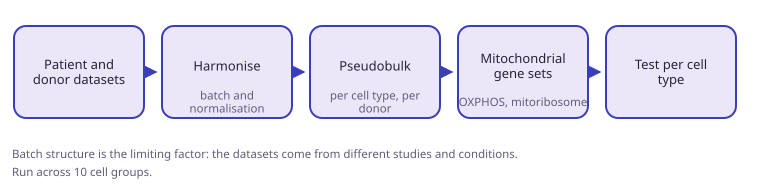
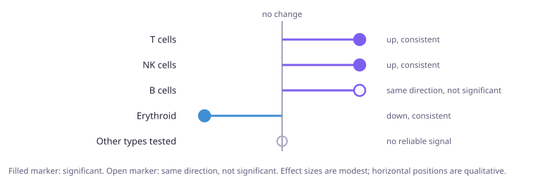

The receiver-program pipeline was extended to disease. In acute myeloid leukemia against healthy donors, mitochondrial genes are modestly but consistently up in T and NK cells, down in erythroid cells, and flat elsewhere. Batch structure across studies is the limiting factor.
Objective
- Identify and characterise mitochondrial receiver programs in a disease context.
- Establish a comparison that holds up across datasets from different studies.
Method
- Select patient and healthy donor datasets.
- Harmonise batch structure and normalisation.
- Aggregate to pseudobulk per cell type, per donor.
- Score against mitochondrial gene sets, chiefly oxidative phosphorylation and mitochondrial ribosome genes.
- Test per cell type. Run across 10 cell groups.

Results
- T and NK cells: up, modest but consistent.
- B cells: same direction, short of significance.
- Erythroid cells: down.
- Remaining cell types tested: no reliable signal.
- Not every one of the 10 groups shows significant variation in pathways.

Limits
- Datasets come from different studies and experimental conditions, so batch correction drives the outcome.
- Dataset selection for multi-disease comparison is still open.
- Review of the code is still outstanding.